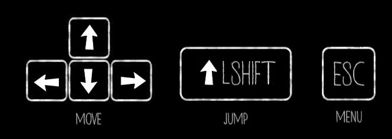
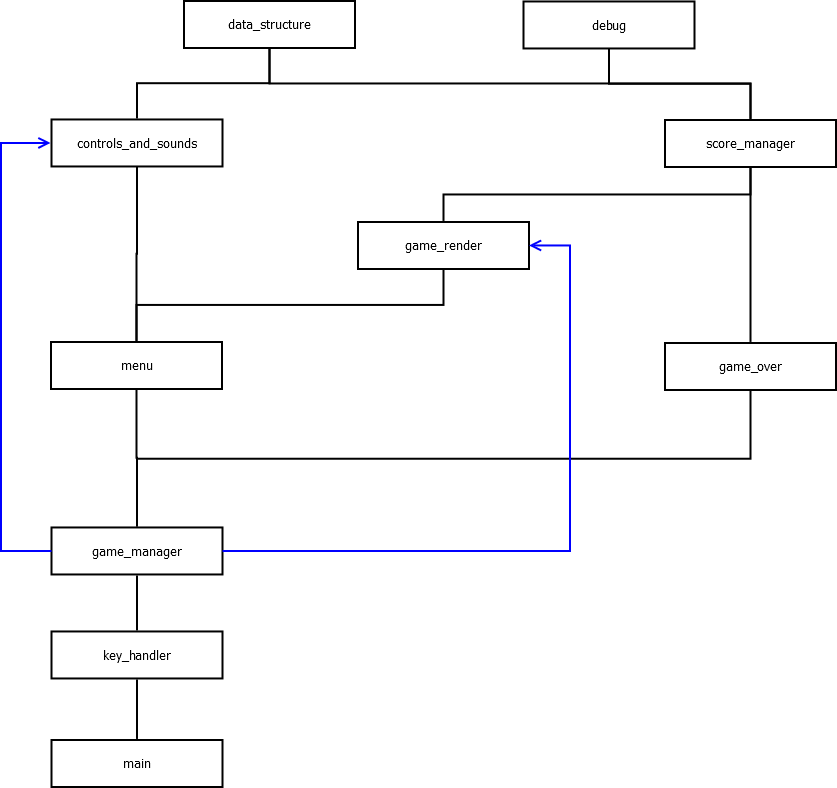

Endless easy game based on C++ and SFML libraries.
It's simple and funny at the same time because it takes Super Mario Bros and remake with him a new spectacular season never seen before.
The main states are:
PLAY
MENU
OPTION
CONTROL
OVER
The game is split in the next 10 modules:
- game_manager:
there are the implementation of the function to setup all the variables to make the whole program works properly and switch from the different state.
- game_render:
there are the implementation of the functions to update the player position and the rendering of the image in the PLAY state game.
- game_over:
there are the implementation of the DEATH state game, that freezes the window.
- key_handler:
this is the manager of keyboard input that combine a key with a function.
- menu:
this is the menu manager that welcomes the user and allows to him to select one of the menu voices.
- controls_and_sounds:
there are the implementation of the functions to play, pause and switch from different music and view a simple image to instruct the user on which controls he can use.
- score_manager:
score manager that saves the current score of the game on a file.
- main:
there are the implementation of the functions setup() and main(). It also declares the variables like FPS and main window.
- debug:
this file stores the defines of the game to handles the debug of the game.
Let's have a look at the controls before start!

DEPENDENCIES DIAGRAM :

Made for the advanced programming exam by Simone Cavana UNIMORE - university of Modena and Reggio emilia
 1.8.8
1.8.8